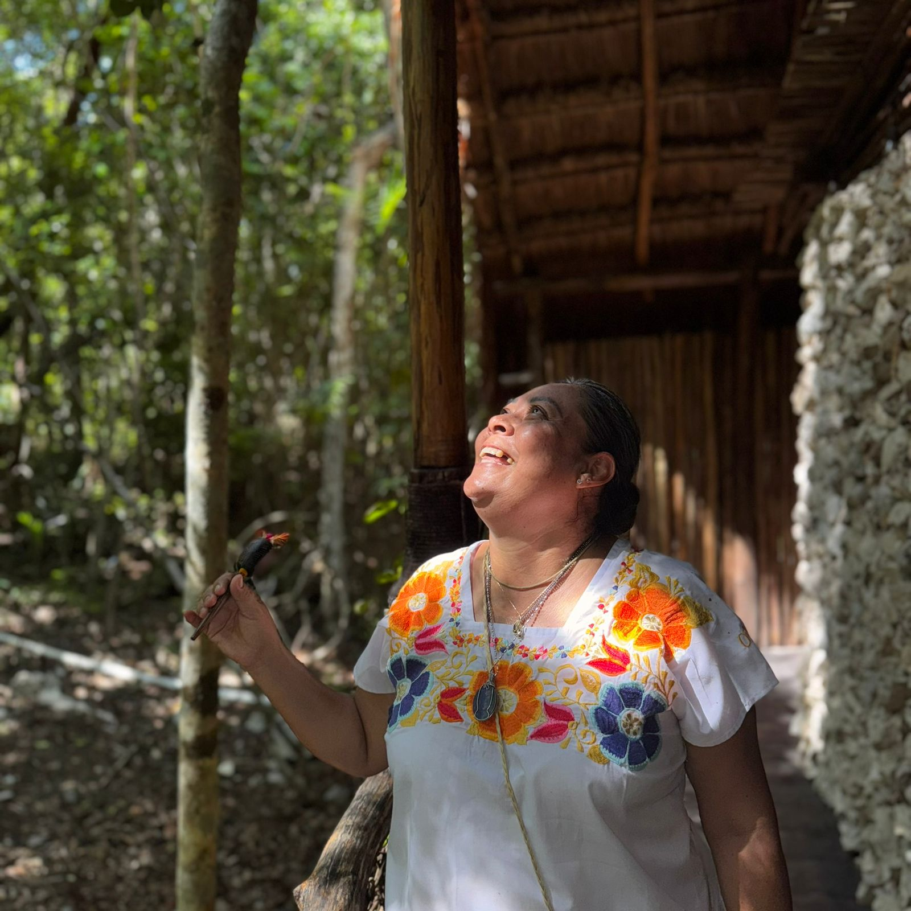

Tu propio camino
Cada persona tiene un ritmo y una manera única de volver a su centro.
Bienestar · Naturaleza · Presencia
Camino del Corazón
Un espacio para detenerte, escucharte y volver a ti.
Conocer el retiro ↓Respiración · Meditación · Cacao · Fuego · Selva
Un camino hacia el corazón
Bel Puksiikal nace del deseo de compartir herramientas que acompañen procesos de transformación interior, bienestar y autoconocimiento.
No hay dogmas ni formas obligatorias de creer: hay un espacio cuidado para respirar, sentir y reconectar con tu propia sabiduría.
La esencia
Cada persona tiene un ritmo y una manera única de volver a su centro.
Acompañamos sin sustituir el proceso personal de nadie.
La tierra, el silencio y los elementos abren espacio para recordar.
Una invitación abierta, sin necesidad de pertenecer a ninguna religión.
K'ÁÁK'
Dos noches para salir del ruido y volver a ti.
El recorrido
La experiencia incluye
Hospedaje y alimentación
Caminata consciente en la selva
Respiración y meditación
Sobada maya
Ceremonia de cacao
Fuego sagrado e integración
Yo recorrí un camino para encontrarme en mi propio corazón. Bel Puksiikal es la forma en que comparto las herramientas que encontré para que cada persona pueda recorrer su propio camino hacia sí misma.

Quien acompaña
Bióloga, terapeuta spa certificada e IxMen. Con más de 15 años acompañando procesos de transformación personal.
Su camino reúne prácticas de meditación, mantras, ceremonias, naturaleza y trabajo corporal; enseñanzas recibidas de maestros, su Guru y abuelas mayas.
Primer círculo K'ÁÁK'
Escribe K'ÁÁK' y recibe toda la información para reservar tu lugar.